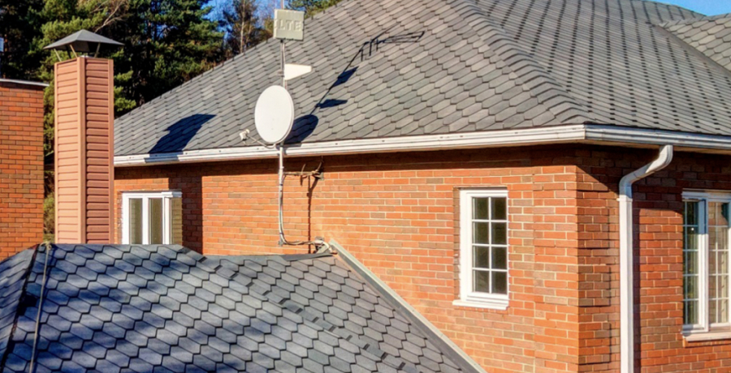

Важнейшая задача кровли — защищать нижележащие слои от дождевой воды и тающего снега. Ведь влага быстро разрушает стропильную систему: деревянные элементы гниют, а металлические ржавеют. Кроме того, сырая минеральная вата, которую обычно используют в качестве утеплителя крыши, перестает держать тепло — конструкция начинает промерзать.
Один из самых эффективных кровельных материалов — гибкая черепица. Она отлично выглядит, мало весит и подходит для крыш практически любой формы — в том числе изогнутых. Технология монтажа продумана до мелочей, поэтому качественно уложить ее может человек даже с минимальным строительным опытом. Но чтобы получить долговечную и герметичную кровлю, важно не допускать ошибок.
При малых уклонах во время таяния снега на кровле образуются лужицы воды, которым не позволяют стекать вниз рядом расположенные участки нерастаявшего снега. Через стыки и нахлесты между гонтами черепицы эта вода затекает под кровельное покрытие — появляется протечка. Проблему может усугубить ветер, загоняющий воду в стыки. Для справки: гонт – это пластина гибкой черепицы.
Поэтому уклон крыши с гибкой черепицей должен быть не меньше 12 градусов. Когда она более пологая, воде проще затечь между отдельными элементами.
Гибкую черепицу укладывают на сплошное основание из листов фанеры или плит ОСП-3. Для компенсации их линейного расширения, которое возникает при увеличении влажности воздуха, между листами необходимо оставлять зазор в 3–5 мм. Важно также, чтобы края соседних листов не висели в воздухе: все стыки должны лежать на опорах.
Если не выполнить эти условия, покрытие из гибкой черепицы может деформироваться или даже разорваться. А основание – вспучиться и пойти волнами.
Выбор толщины сплошного основания зависит от шага стропил, сечения и шага деревянной обрешетки, снеговой нагрузки. Минимальный шаг разряженной обрешетки для основания из ОСП-3 9 мм должен составлять не более 300 мм. Основание под укладку гибкой черепицы должно быть сухим, сплошным, жестким и ровным, допускаются перепады не более 1–2 мм.
Подкладочный ковер и элементы гибкой черепицы фиксируют к основанию с помощью скоб и гвоздей, которые удерживаются в толще благодаря трению.
В тонком основании гвозди держатся очень слабо: кровельный материал под собственным весом может просто сползти с наклонной поверхности и выдернуть их. Чтобы крепеж плотно удерживался в основании, его толщина должна быть не менее 9–12 мм в зависимости от коллекции выбранной черепицы.
Подкладочный ковер сглаживает неровности основания и служит для дополнительной гидроизоляции подкровельного пространства. Лучших результатов позволяют добиться тонкие безосновные подкладочные ковры – например, ANDEREP серии NEXT от ТЕХНОНИКОЛЬ.
Подкладочный ковер необходимо монтировать по всей площади крыши независимо от угла наклона скатов. В местах наиболее вероятных протечек (ендова, карнизный свес, примыкания к вертикальной поверхности, кровли с малым уклоном скатов) необходимо монтировать самоклеящийся подкладочный ковер, а на оставшуюся площадь кровли монтируется подкладочный ковер с механической фиксацией. Для удобства монтажа на лицевую сторону материала нанесена разметка – она позволяет отмерять и отрезать материал, выравнивать соседние полотна друг относительно друга, а также ориентировать при монтаже гонты черепицы.
На ковре с механической фиксацией ANDEREP NEXT FIX есть продольная самоклеящаяся битумная полоса, она исключает применение мастики для монтажа продольных перехлестов (но для монтаж поперечных перехлестов нужно применять битумную мастику). А вот самоклеящийся подкладочный ковер ANDEREP NEXT SELF отлично клеится сам на себя и не нуждается в мастике для формирования перехлестов — достаточно приклеить материал сам на себя и получается отличное герметичное соединение.
Поскольку битумно-полимерные безосновные подкладочные ковры ANDEREP серии NEXT на 90% состоят из битума, битум способен затягиваться не только в местах механического крепления, но и в небольших проколах и порезах, самозалечивание делает эти места водонепроницаемыми.
Из самоклеящегося ковра ANDEREP NEXT SELF можно даже делать заплатки как на нем самом, так и на ковре механической фиксации ANDEREP NEXT FIX.
Эти материалы отличаются высокой прочностью и большим сопротивлением раздиру стержнем гвоздя, поэтому подкладочные ковры ANDEREP NEXT FIX можно монтировать не только с помощью кровельных ершённых гвоздей, но и степлером на оцинкованные скобы.
Каждый элемент черепицы фиксируют к основанию специальными оцинкованными гвоздями — их количество зависит от угла наклона ската. Расположение гвоздей варьируется для черепиц разной формы — эту информацию следует поискать в руководстве по монтажу.